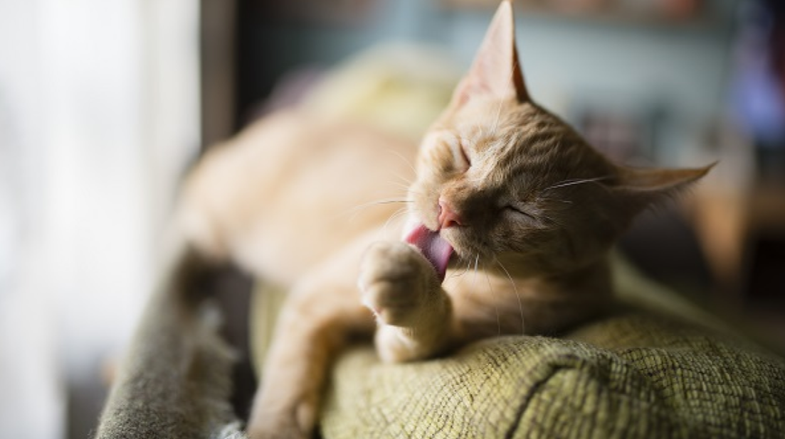

Por que os gatos se lambem tanto?
1°: Banho
Assim como os humanos, os gatos também adoram um banho! Assim, a lambida é a forma com a qual os felinos se higienizam . Elas podem ocorrer várias vezes ao dia, como depois de comer, antes de dormir.
2°:Afeto
Para os pais de pets com dois gatinhos ou mais, é muito comum vê-los se lambendo. Essa prática demonstra o afeto presente entre os bichinhos e é um hábito herdado de suas mamães que os lambem como sinal de carinho.
3°: Marcação de território
Todos sabemos que os focinhos dos gatos são muito poderosos e que eles podem identificar outros felinos com base no cheiro. E como esse cheiro é transmitido? Por meio da lambida! Assim, para marcar território, um mecanismo utilizado para isso é se lamber.
Atenção
Caso o bichinho esteja se lambendo demais, a ponto de remover tufos de pelo, é fundamental entrar em contato com um veterinário para resolver esse problema, que pode estar relacionado ao estresse.